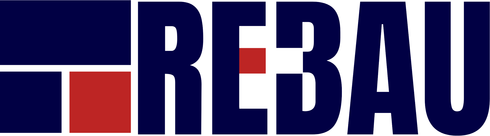
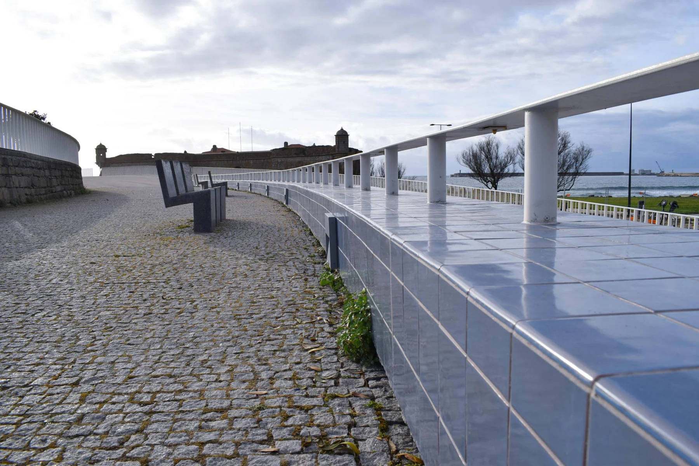

Começar pelo tipo de intervenção.
Cada categoria abre um exemplo publicado pela Rebau. O nome e a fotografia mantêm-se juntos, sem atribuir à imagem trabalhos ou resultados que a fonte não descreve.

Reabilitação · Construção · Património
Um olhar sobre intervenções apresentadas pela Rebau. Fachadas, edifícios e detalhes que merecem uma leitura mais próxima.
Explorar a demonstração
Intervenções publicadas
Explore as categorias e os exemplos que a Rebau apresenta. Cada imagem mantém o nome e o contexto publicados.
Azulejos
Porto. Exemplo apresentado pela Rebau na categoria de azulejos.
Imagem do portefólio oficial. A seleção não apresenta um diagnóstico nem uma comparação de antes e depois.
Ver a apresentação oficialAssinale os temas que gostaria de esclarecer.
Temas selecionados
Apenas um resumo local. Não se enviou um pedido nem se avaliou o estado de um edifício.
Uma proposta de Ricardo Almeida
O vosso site já distingue fachadas, reabilitação e azulejos, com exemplos próprios. Nesta proposta, aproximei essa escolha do que o visitante procura compreender antes de falar sobre o seu edifício.
Esta é uma demonstração independente, preparada para mostrar uma possibilidade de apresentação. O website oficial permanece a referência da empresa.
Cada categoria abre um exemplo publicado pela Rebau. O nome e a fotografia mantêm-se juntos, sem atribuir à imagem trabalhos ou resultados que a fonte não descreve.
Os temas selecionados ficam num resumo local: o que se pretende conservar, o que preocupa ou que informação reunir. São pontos para conversar, não um diagnóstico do edifício.
Uma futura página de caso pode reunir contexto, trabalho e resultado. Aqui usei apenas imagens publicadas; não construí uma comparação de antes e depois sem fontes correspondentes.
Uma filmagem a preparar convosco
Proponho filmar uma intervenção que possam divulgar, acompanhando a equipa a observar um elemento, preparar o trabalho e executar uma etapa de recuperação. Uma explicação de quem intervém pode mostrar o que se pretende preservar e porquê. O edifício, o âmbito e as autorizações seriam escolhidos convosco.
Na Canvas Custom Furniture, fiz a filmagem, a edição e a integração do filme no website. Incluí esse projeto como exemplo concreto da ligação entre conteúdo e página.
Ver o projeto Canvas